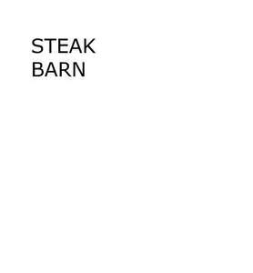

Trade Mark Journal No.2025/021 23 May 2025
UK00004198387 3 May 2025 (11,21,29,30,43)
Mark 1
STEAKBARN
Mark 2
STEAK BARN
Mark 3

International priority date claimed: 2 May 2025
(United Kingdom)
(00004198294)
- Class 11
- Apparatus for cooking; apparatus for grilling; BBQ; wood-fired cooking apparatus; parts and fittings for all the aforesaid goods.
- Class 21
- Household or kitchen utensils; grills (cooking pans); pots; pans; cooking utensils and containers; articles for cleaning purposes; brushes; BBQ cooking utensils; BBQ cleaning articles including brushes gardening gloves; watering cans.
- Class 29
- Meat; seafood; fish; poultry; game; chicken; venison; beef; lamb; pork; prepared meats; processed meats; sausages; hot dogs; bacon; meatballs; ham; burgers; haggis; puddings; meat-based kebabs; vegetable-based kebabs; meat extracts; edible oils; edible fats; snack foods; snacks of dried or preserved meat, fish, fruit or vegetables; root vegetable crips; soup; fresh, chilled or frozen products made from meat including processed meat, seafood, fish, poultry and/or game; fresh, chilled or frozen prepared meals or dishes containing meat; fresh, chilled or frozen prepared meals or dishes containing seafood; fresh, chilled or frozen prepared meals or dishes containing fish; fresh, chilled or frozen prepared meals or dishes containing poultry; fresh, chilled or frozen prepared meals or dishes containing game; fresh, chilled or frozen prepared meals or dishes containing meat substitutes; fresh, chilled or frozen prepared meals or dishes consisting principally of vegetables; cooked potatoes; processed potatoes; preparations containing potatoes; cooked meals consisting principally of fish; fresh and frozen pre-packed desserts; dairy desserts; chilled desserts; puddings for use as dessert; fruit desserts.
- Class 30
- Marinades; marinades for meat; sauces; pasta; ketchup; salt; mustard; vinegar; condiments; spices; seasonings; dried herbs; flavourings; puddings; fresh or frozen prepared meals or dishes consisting primarily of rice; fresh or frozen prepared rice-based meals or dishes; fresh or frozen prepared meals or dishes consisting primarily of pasta; fresh or frozen prepared pasta-based meals or dishes; fresh or frozen prepared noodle-based meals or dishes; fresh or frozen pastry stuffed with meat; fresh or frozen pastry stuffed with meat substitute; fresh or frozen pastry stuffed with seafood; fresh or frozen pastry stuffed with vegetables; sausage rolls; savoury pies; sandwiches; hamburger sandwiches; wrap sandwiches; filled sandwiches; open sandwiches; frozen pre-packed desserts; pre-packed desserts; sweet pies.
- Class 43
- Services for provision of food and drink; café services; restaurant services; self-service restaurant services; public house; bar services; wine bar services; catering services; take away food services; providing food and drink via a mobile truck; room hire services.
Balgove Larder Limited
Representative: Five Zero IP Limited